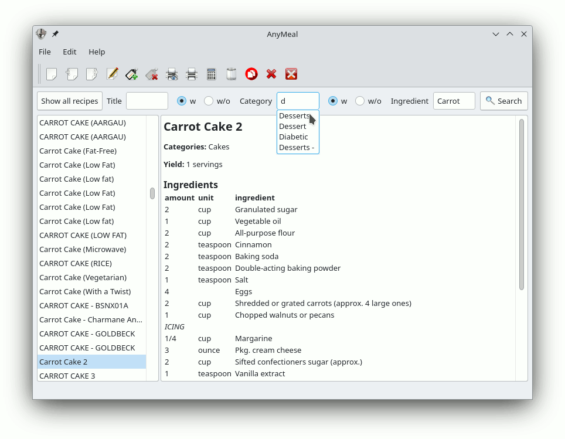

AnyMeal
Recipe Database Software

AnyMeal is a free recipe management software developed using SQLite3 and Qt5. It can manage a cookbook with more than 250,000 MealMaster recipes, thereby allowing to import, export, search, display, edit, and print them. AnyMeal is available for GNU/Linux and Microsoft Windows.
For recipes to download see: